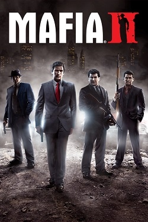
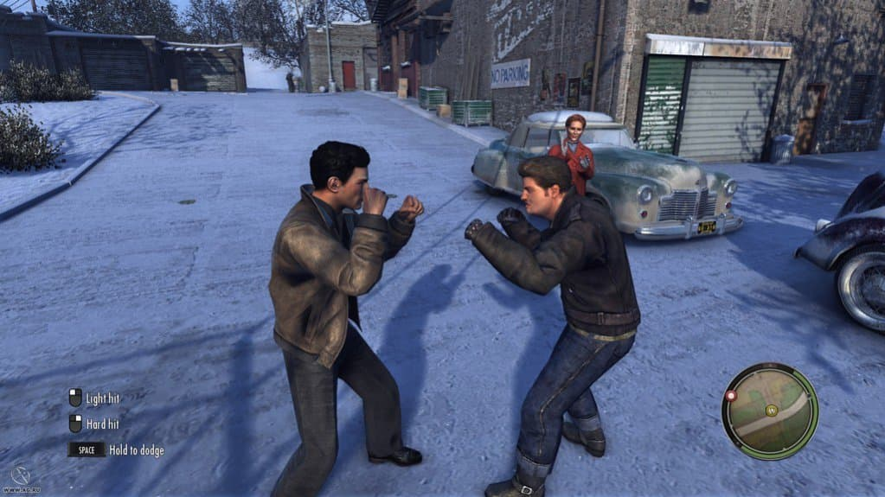
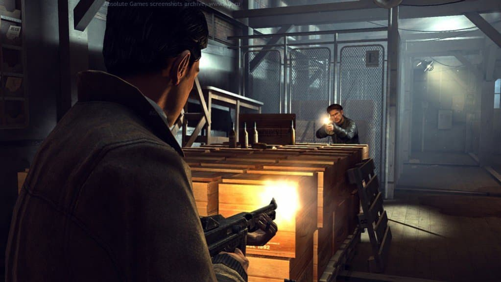
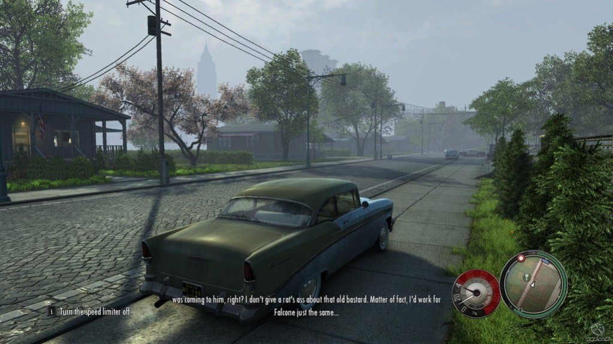
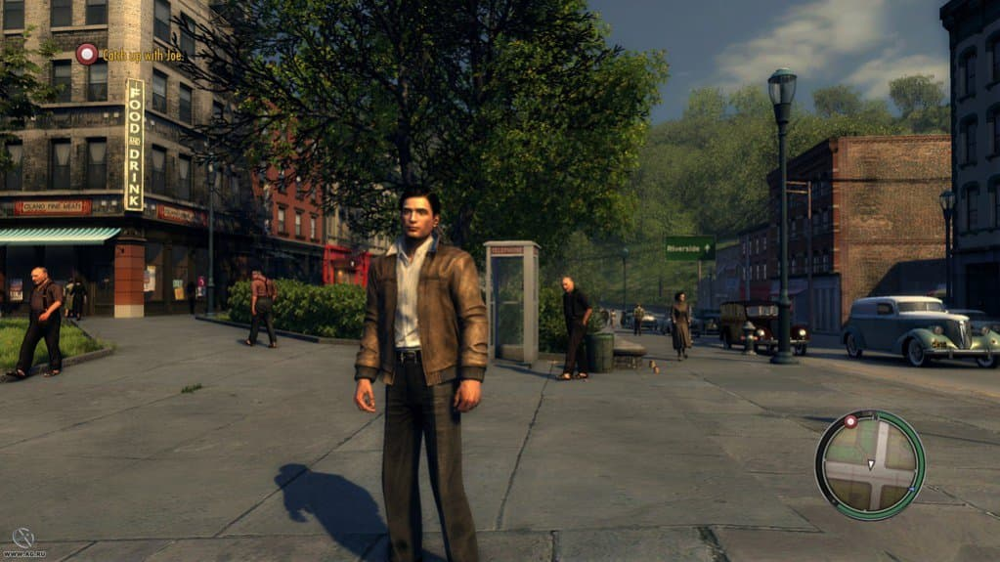

Mafia II

Дата выхода: 2011
Жанр: Action, Shooter, Racing, Cars, 3D, 3rd Person
Разработчик: 2K Czech
Издатель: 2K Games
Платформа: PC
Тип издания: Repack
Язык интерфейса: Русский
Язык озвучки: Русский
Таблетка: Не требуется (DRM-Free)
Системные требования:
Операционная система: Windows 7 / 8.0 / 8.1 / 10
Процессор: Pentium D 3Ghz or AMD Athlon 64 X2 3600+
Оперативная память: 1.5 ГБ
Жесткий диск: 8 ГБ
Видеокарта: Video Card: nVidia GeForce 8600 / ATI HD2600
Установить Mafia II
Инструкция по установке:
1. Скачайте установщик .torrent
2. Запустите файл установки в любом удобном Torrent-Клиенте
3. Установите .exe файл и запустите его
4. Следуйте инструкции внутри установщика
Размер файла: 5.48 GB
Описание игры
Что может быть более притягательным, чем гангстерский мир, с процветающим беззаконием и полным отсутствием морали, как таковой? Беспощадность, интриги и множество опасностей – вот она Мафия 2 во всей красе.
Игра выполнена в жанре приключенческого экшена. Игроку в роли Вито Скалетты необходимо путешествовать по городу Эмпайр-Бэй, общаться с различными персонажами, выполнять задания, которые заключаются в перестрелках, необходимости водить автомобиль и т. д
Локация игры — город Эмпайр-Бэй — являет собой территорию очень большого размера, перемещение по которой абсолютно свободно.
Скриншоты из игры
 |
 |
 |
 |